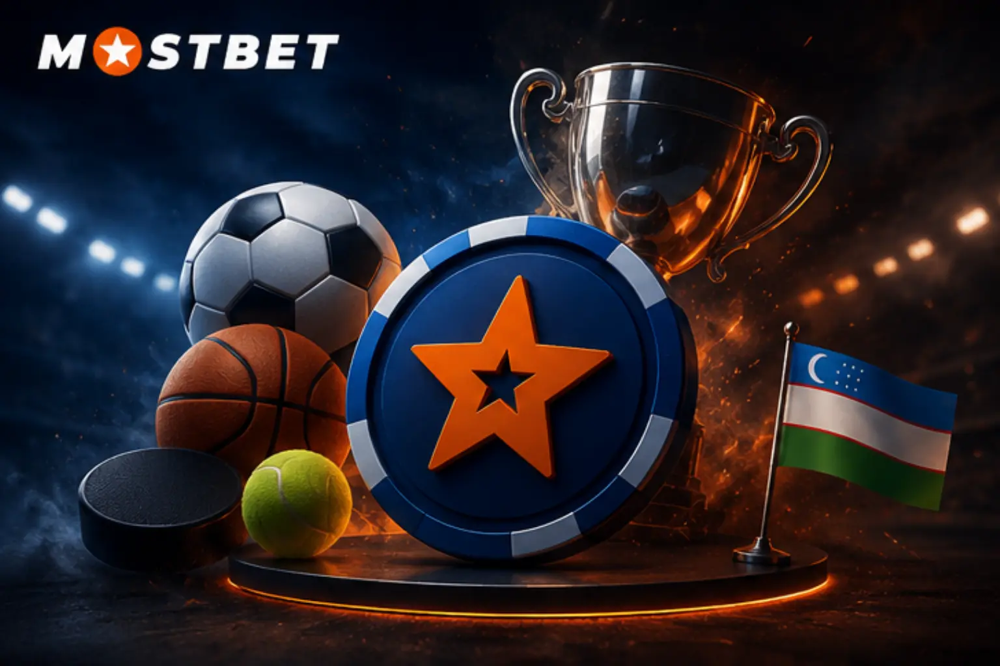

Mostbet — bu nima va u O'zbekistonda qanday ishlaydi?

Mostbet — sport stavkalari va onlayn kazino sohasidagi xalqaro platforma bo'lib, 2009 yilda faoliyatini boshlagan. Hozirda xizmat 93 dan ortiq mamlakatda taqdim etilib, ro'yxatdan o'tgan 25 milliondan ziyod a'zoga ega bo'lib, jahon miqyosidagi eng yirik bukmeyker tashkilotlaridan biri sifatida tan olingan.
O'zbekiston xizmat uchun muhim bozar hisoblanadi: foydalanuvchilar o'zbek so'mida mablag' kiritishlari, mahalliy valyutada pul tikishlari hamda o'z tillarida yordam olishlari mumkin. Futbol, boks, kurash, tennis, basketbol, kibersport — ro'yxatda 30 dan ko'proq sport turi mavjud.
Sport imkoniyatlaridan tashqari, Mostbet katta kazino bo'limini ham taqdim etadi: turli-tuman slotlar, jonli krupiyelar bilan o'yinlar, klassik stol o'yinlari, virtual sport va ko'plab boshqa taklif. O'zbekiston Premier ligasi va terma jamoa o'yinlariga maxsus e'tibor qaratilgan.
Futbol, boks, kurash, tennis, basketbol, voleybol, kibersport — keng imkoniyatlar
Slotlar, ruletka, poker, bakara, jonli dilerlar — hammasiga bitta joyda kirish
Payme, Click, Uzcard, Humo — depozit va yechib olish o'zbek so'mida
O'zbekiston Premier ligasi va milliy terma jamoa o'yinlariga alohida koeffitsientlar va jonli ko'rsatuv
Mostbetga qanday kiriladi: bosqichma-bosqich amaliy yo'riqnoma

Mostbet tizimiga kirish jarayoni oson va shoshilinch — hammasi taxminan yarim daqiqada amalga oshiriladi. Kompyuter, smartfon yoki planshetdan har qanday qulay vaqtda kirish imkoni mavjud.
Rasmiy sayt orqali akkountga kirish
- Brauzer dasturini oching va Mostbet rasmiy saytiga o'ting
- Sahifaning o'ng yuqori burchagidagi «Kirish» tugmasiga bosing
- Kirish oynasi ochiladi — telefon raqami, e-mail yoki akkount ID sini belgilang
- Ro'yxatdan o'tganingizda kiritgan parolingizni yozing
- «Kirish» tugmasiga bosing
- Ma'lumotlar tasdiqlangandan so'ng shaxsiy hisobingiz ochiladi
Mobil brauzer yordamida akkountga kirish
Mostbet veb-sayti turli mobil qurilmalarga to'liq moslashgan. Telefoningizda brauzerni ochib, sayt manziliga o'ting, «Kirish» tugmasini bosing va kirish ma'lumotlaringizni kiriting. Mobil versiyada kompyuter versiyasi bilan bir xil barcha funksiyalar ishlaydi.
Mostbet akkountiga kirish imkoniyatlari
Mostbet platformasiga kirish uchun turli xil usullar ko'zda tutilgan. O'zingizga eng mos kelganini tanlang:
| Kirish usuli | Nima kerak | Vaqti | Afzalligi |
| Telefon raqami | Raqam + parol | 10-15 soniya | Parolni tiklash qiyin emas |
| Elektron pochta | Email + parol | 10-15 soniya | Kompyuter egalariga qulay |
| Akkount ID si | ID + parol | 10-15 soniya | Qo'shimcha kirish yo'li |
| Ijtimoiy tarmoqlar | Profil | 5-10 soniya | Parol kerak emas |
| Google / Facebook | Google/FB akkount | 5-10 soniya | Bir zumda kirish |
Telefon raqami yordamida akkountga kirish
Eng ko'p foydalaniladigan usul — ro'yxatdan o'tishda berilgan mobil raqam. Mamlakat kodi (+998 — O'zbekiston) bilan raqamingizni kiriting, parolni yozing va «Kirish» tugmasini bosing. SMS bilan tasdiqlangan raqam akkountingizni qo'shimcha himoyalaydi.
Ijtimoiy tarmoqlar yordamida akkountga kirish
Mostbet bir nechta keng tarqalgan ijtimoiy tarmoqlar va platformalar orqali tez kirishni qo'llab-quvvatlaydi: Google, Facebook, Telegram, Twitter/X va Steam. Kirish formasida tegishli belgini bosing, profil ma'lumotlaringizdan foydalanishga rozilik bildiring — va bir necha soniyada shaxsiy hisobingizda bo'lasiz.
Mostbet mobil dasturi orqali akkountga kirish

Smartfon egalari uchun Mostbet mobil dasturi platformaga kirishning eng qulay va samarali vositasi hisoblanadi. U veb-saytning barcha funksiyalarini o'z ichiga olgan holda, faqat mobil qurilmalar uchun mo'ljallangan bir qator qo'shimcha imkoniyatlar ham taqdim etadi.
Mobil dasturning afzalliklari
- Kirish cheklovlarini avtomatik aylanib o'tish — faol serverga ulash
- Brauzerdan ko'ra tezroq ishga tushish — yengillashtirilgan kod tufayli
- Koeffitsient o'zgarishida push-xabarnoma yuborish
- Trafik tejash uchun ma'lumotlarni siqish
- Dasturni har ochganda avtomatik kirish imkoni
- Biometrik identifikatsiya (barmoq izi / Face ID)
Android qurilmasida dasturga kirish
Android uchun dastur Mostbet rasmiy saytidan APK-formatda yuklab olinadi. O'rnatish faylini saytdan yuklab oling, qurilmangiz xavfsizlik sozlamalarida norasmiy manbalardan o'rnatishga ruxsat bering, o'rnatishni to'ldiring va dasturni ishga tushiring. Birinchi marta ochganingizda hisob ma'lumotlarini kiriting. «Meni yodda saqlang» tugchasini yoqib, keyingi kirishlarni avtomatlashtiring.
iOS qurilmasida dasturga kirish
iPhone va iPad foydalanuvchilari dasturni App Store'dan yuklab olishlari (mintaqaga qarab mavjudligi farq qiladi) yoki Safari brauzerida saytning mobil ko'rinishidan foydalanishlari mumkin. App Store'da Mostbet'ni qidirib toping, o'rnating, oching va saytdagi kirish ma'lumotlaringiz bilan kiring. Sayt, Android dasturi va iOS dasturi — hammasi bitta hisob bilan ishlaydi.
Mostbet akkaunti: barcha imkoniyatlar

Tizimga kirgandan so'ng darhol platformaning to'liq funksionali foydalanishga ochiladi. Sodda va mantiqiy interfeys kerakli bo'limga tez o'tish va o'yin hisobingizni qulay boshqarish imkonini beradi.
Hisobni boshqarish
Joriy hisobni kuzating, qulay usulda balansni to'ldiring, yutgan mablag'laringizni bank plastik kartasi yoki elektron to'lov tizimiga o'tkazing, barcha pul operatsiyalari tarixini ko'ring.
Sodiqlik dasturi
Akkaunting Mostbet sodiqlik dasturidagi mavqeingizni ko'rsatib turadi. Har bir stavkadan Mostbet-coinlar avtomatik to'planadi. To'plangan tangalar real pulga, freebetlarga aylantirilishi yoki maxsus tanlov o'yinlarida ishlatilishi mumkin.
Akkount bo'limlari
| Bo'lim | Maqsadi | Asosiy funksiyalar |
| Shaxsiy ma'lumotlar | Profil boshqaruvi | E-mail, telefon, hujjatlarni o'zgartirish |
| Balans | Pul muomalalari | To'ldirish, yechish, operatsiyalar jurnali |
| Stavkalar tarixi | Statistika | Faol va tugallangan stavkalarni ko'rish |
| Bonuslar | Aksiyalar va promo kodlar | Bonusni ulash, bajarilishini kuzatish |
| Tasdiqlash | Identifikatsiya | Hujjatlarni yuborish, holat kuzatuvi |
| Sozlamalar | Moslash | Til, valyuta, bildirishnomalar, xavfsizlik |
Mostbetga kirishda qiyinchiliklar: hal qilish usullari
Ayrim hollarda shaxsiy hisobga kirishda to'siqlar paydo bo'lishi mumkin. Quyida eng keng tarqalgan holatlarga yechimlar keltirilgan.
Parolni yo'qotdingizmi?
Parolni esdan chiqarish odamlarga tez-tez sodir bo'ladigan holat. Bir necha daqiqada kirishni qayta tiklash mumkin. Kirish sahifasidagi «Parolni unutdim?» havolasiga bosing, tiklash usulini tanlang (telefon raqami, e-mail yoki akkount ID si) va talab qilingan ma'lumotlarni to'ldiring. Yangi parol SMS yoki elektron pochta orqali yuboriladi. Kirgach, xavfsizlik bo'limida zudlik bilan yangi kuchli parol o'rnating.
Saytga kirish imkoni yo'q
Mostbet rasmiy saytiga ulanib bo'lmasa, muqobil variantlardan birini sinab ko'ring:
- Faol mirror havola: Telegram-kanal @mostbet da yangilanadi, shuningdek uni yordam xizmatidan yoki ishonchli hamkor saytlardan olish mumkin
- VPN ilovasi: ishonchli VPN dasturini o'rnating, xorijiy serverga ulaning va rasmiy saytni u orqali oching
- Mobil dastur: ilovada cheklashlarni avtomatik chetlab o'tuvchi mexanizm mavjud, qo'shimcha sozlash talab etilmaydi
Hisob blokirovka qilingan
Hisobga kirish cheklanishi kamdan-kam bo'ladi, ammo uchrab turadi. Asosiy sabablar: foydalanuvchi shartnomasi shartlarini buzish, bir nechta hisob ochganlikka shubha, identifikatsiya hujjatlarini taqdim etish zarurati yoki texnik nosozlik. Mostbet qo'llab-quvvatlash xizmatiga murojaat qiling — jonli-chat, support@mostbet.com yoki WhatsApp, Viber va Telegram orqali. Operatorlar 24 soat aloqada.
Mostbet hisobingizni xavfsiz saqlash usullari
Onlayn platforma bilan ishlashda hisob xavfsizligini ta'minlash asosiy vazifalardan biri. Bir necha oddiy qoidaga amal qilish moliyaviy mablag'laringiz va shaxsiy ma'lumotlaringizni himoya qiladi.
Xavfsizlikni mustahkamlash bo'yicha tavsiyalar
- Kamida sakkiz belgidan tashkil topgan parol tanlang
- Parolda bosh harflar, kichik harflar, raqamlar va maxsus belgilarni aralashtiring
- Tug'ilgan sana, ism kabi osongina taxmin qilinadigan kombinatsiyalardan voz keching
- Turli xizmat va saytlarda bitta paroldan foydalanmang
- Hisob sozlamalarida ikki bosqichli tasdiqlash usulini yoqing
- Parolni har 2-3 oyda yangilab turing
- Begona qurilmadan foydalanganingizda seans yakunida albatta tizimdan chiqing
Fishing saytini aniqlash belgilari
Firibgarlar kirish ma'lumotlarini o'g'irlash maqsadida Mostbet saytining soxta variantlarini doimiy ravishda yaratadilar. Shubhali saytning asosiy belgilari: manzil satrida xavfsizlik qulfi belgisi yo'qligi, noodatiy URL-manzil, matnda grammatik xatolar, kirishda qo'shimcha ma'lumot so'ralishi, dizayning rasmiy saytdan farq qilishi. Login va parolingizni kiritishdan avval manzil qatorini tekshirishni odat qiling. Faqat Mostbetning rasmiy va tasdiqlangan manba havolalaridan foydalaning.
Kirish muammolarida texnik ko'mak
Muammoni o'z kuchingiz bilan bartaraf eta olmasangiz, Mostbet qo'llab-quvvatlash mutaxassislari haftaning har kuni, to'xtovsiz yordam ko'rsatishga tayyordir.
Murojaat kanallari
Sayt sahifasining o'ng pastki burchagida joylashgan. O'rtacha javob muddati: 1 daqiqadan 3 daqiqagacha. Eng operativ muloqot vositasi.
support@mostbet.com — batafsil murojaatlar uchun mos kanal. Javob odatda bir necha soat ichida beriladi.
Telegram, WhatsApp va Viber orqali qulay muloqot. O'zbek tilida to'liq xizmat ko'rsatiladi.
Qo'llab-quvvatlash bilan bog'lanishdan oldin tayyorlab oling
- Ro'yxatdan o'tishda kiritilgan telefon raqami yoki e-mail manzili
- O'yin hisobining identifikatsion raqami (esda bo'lsa)
- Yuzaga kelgan muammoning qisqa tavsifi
- Ekranda paydo bo'lgan xato xabarlarining tasvirlari (mavjud bo'lsa)
Qo'llab-quvvatlash xizmati o'zbek tilida javob beradi va parolni tiklash, hisob blokidan chiqarish, texnik muammolarni bartaraf etish kabi barcha kirish masalalarida yordam ko'rsatadi.
Ko'p beriladigan savollar va javoblar
Yo'q. Stavkalar qo'yish, kazino o'yinlarini ishga tushirish va balans boshqaruvi uchun shaxsiy hisob talab etiladi. Ro'yxatdan o'tish bepul.
Mostbet haqiqiy xalqaro litsenziya asosida xizmat ko'rsatadi. Platformadan foydalanishdan oldin O'zbekiston qonunchiligini o'rganib chiqishni tavsiya etamiz.
Yo'q. Ilova uchun saytdagi xuddi shu kirish ma'lumotlari mos keladi. Bir nechta hisob ochish xizmat shartlarini buzadi va barcha profillarning bloklanishiga sabab bo'ladi.
Shaxsiy qurilmangizda — to'liq xavfsiz. Umumiy foydalaniladigan kompyuter yoki begona qurilmada esa kirish ma'lumotlarini saqlamaslik kerak, ishni yakunlaganingizdan so'ng hisobdan chiqishni unutmang.
Payme, Click, Uzcard, Humo, Visa, Mastercard, bank o'tkazmasi, Bitcoin, USDT, Ethereum, Skrill, Neteller va boshqa elektron to'lov tizimlari orqali to'lov qabul qilinadi. O'zbek so'mida barcha operatsiyalar qo'llab-quvvatlanadi.
Mostbet qoidalariga ko'ra bir foydalanuvchiga faqat bitta hisob ruxsat etiladi. Qo'shimcha profil yaratilsa, hamma hisoblar birga bloklanadi.